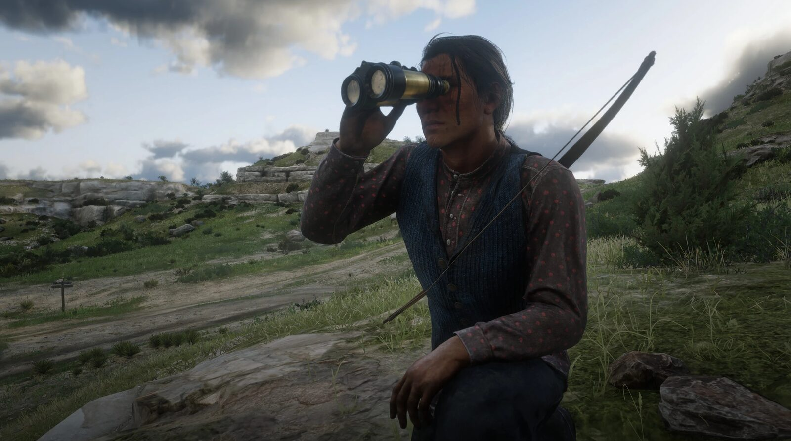
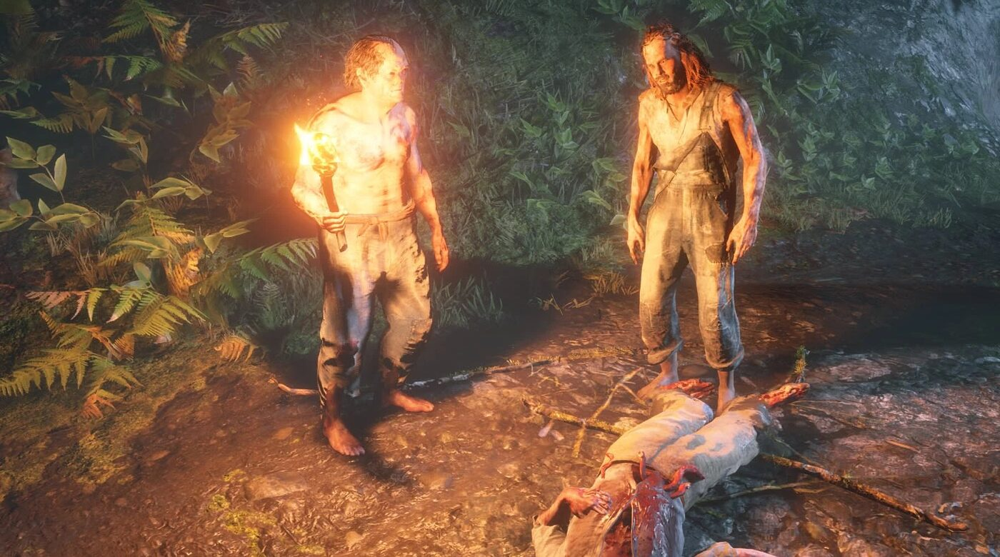
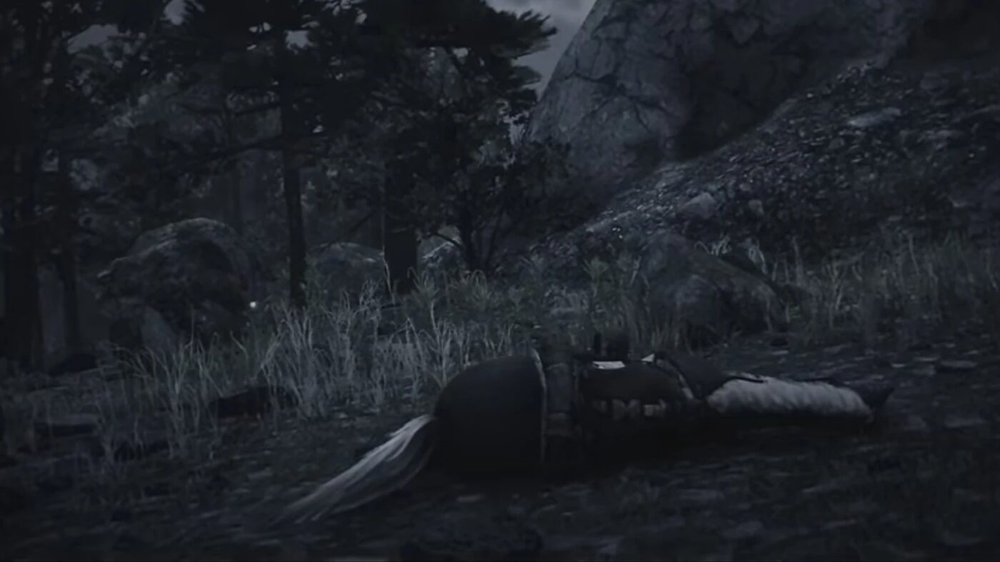

Story guide · Red Dead Redemption 2 Chapter 6: Beaver Hollow Red Dead Redemption 2 Chapter 6 of 6 Beaver Hollow 1899 By Joseph Lambert · Updated July 19, 2026  Eagle Flies, son of Rains Fall, whose war with the Army runs through Chapter 6. Chapter 6 is the final chapter of Red Dead Redemption 2's main story. After the Pinkerton raid on the Lakay camp at the end of Chapter 5, the Van der Linde gang settles at Beaver Hollow. It is the chapter in which the gang comes apart: fourteen story missions, eight named deaths, and four possible versions of its last scene. Full spoilers for Chapter 6 of Red Dead Redemption 2, including the ending, follow. Setting: Beaver Hollow Beaver Hollow is a cave system in Roanoke Ridge, in the state of New Hanover. It sits east of the Kamassa River and west of the mining town of Annesburg. In 1899 the caves are occupied by the Murfree Brood. The gang takes the site by force and camps there.  The Murfree Brood, cleared out of the caves before the gang moves in. Where the chapter begins The boundary between Chapters 5 and 6 is not reported consistently. Three missions sit on the seam: That's Murfree Country, A Fork in the Road and Icarus and Friends. The Red Dead Wiki's mission list places the first two at the head of Chapter 6, while their own mission pages label them Chapter 5. GTABase excludes both from Chapter 6. The wiki notes that Icarus and Friends is playable in Chapter 5 but counts as a Chapter 6 mission on replay. The chapter also opens on one of two branches depending on how Chapter 5 ended. The Red Dead Wiki counts 438,480 valid mission sequences across the game. Treat these three missions as transitional rather than as a hard line. The missions of Chapter 6 The main story missions, in order, with the character who gives each one: That's Murfree Country · Dutch van der Linde Icarus and Friends · Sadie Adler Visiting Hours · Sadie Adler Just a Social Call · Micah Bell The Delights of Van Horn · Micah Bell A Rage Unleashed · Reverend Orville Swanson Goodbye, Dear Friend · Sadie Adler and Dutch van der Linde The Fine Art of Conversation · Josiah Trelawny and Rains Fall The King's Son · Charles Smith Favored Sons · Eagle Flies The Bridge to Nowhere · John Marston My Last Boy · Dutch van der Linde Our Best Selves · Dutch van der Linde Red Dead Redemption · Abigail Roberts Optional missions in the chapter include The Course of True Love IV and V (Penelope Braithwaite), Money Lending and Other Sins VI and VII (Leopold Strauss), Mrs. Sadie Adler, Widow I and II, Archeology for Beginners (Rains Fall), and Honor, Amongst Thieves (Captain Lyndon Monroe). Do Not Seek Absolution I and II are honour-gated and unavailable at low honour. Molly O'Shea Uncle brings a drunk Molly O'Shea back to camp, where she claims she informed on the gang to the Pinkertons. Dutch moves to kill her. Susan Grimshaw shoots her first, then orders Bill and Pearson to burn the body. Rescuing John John Marston was taken by the Pinkertons during the Saint Denis bank robbery in Chapter 4. A balloonist named Arturo Bullard scouts Sisika Penitentiary from the air and is shot dead by O'Driscolls. Arthur and Sadie then storm the prison and free John, against Dutch's wishes. Cornwall and the dynamite At the Annesburg harbour, Dutch demands ten thousand dollars and passage out of the country from Leviticus Cornwall. Cornwall refuses. Dutch shoots him dead. Papers taken from Cornwall's men reveal an Army dynamite shipment, which Arthur and Bill ambush at Van Horn. Arthur and John later use the dynamite to destroy Bacchus Bridge. The Wapiti storyline Chapter 6 runs a second plot alongside the gang's collapse. Eagle Flies, son of the Wapiti chief Rains Fall, wants war with the US Army. Rains Fall wants his people moved somewhere they can survive. Arthur helps both. Eagle Flies' stolen horses are recovered from an Army boat. A sacred site is burned by the Army and Rains Fall's chanupa taken. Colonel Henry Favours withholds smallpox vaccines from the reservation. Peace talks collapse, and Captain Lyndon Monroe is saved from hanging for treason. Eagle Flies is captured and freed from Fort Wallace. In Favored Sons, Dutch admits he is using the Wapiti as a diversion. My Last Boy Eagle Flies leads Wapiti warriors against the Army at the Heartland Oil Fields. A steam blast incapacitates Arthur and Dutch abandons him. Eagle Flies goes back for Arthur and is shot by Colonel Favours. Arthur kills Favours. Eagle Flies dies of his wound. Arthur's illness Arthur Morgan is diagnosed with tuberculosis by Dr. Joseph R. Barnes in Saint Denis. His health degrades across the chapter, and it is visible in cutscenes and in gameplay. Rains Fall gathers herbs for him. Arthur tells Charles that he is dying. Micah exposed Tilly reports that Abigail has been taken to Van Horn by Agent Andrew Milton. Dutch, pushed by Micah, refuses to go. Arthur and Sadie go anyway. Milton tells Arthur that Micah has been informing for the Pinkertons since Guarma. Abigail shoots Milton in the head. Back at Beaver Hollow, Arthur names Micah in front of the gang. John, reported dead after the train robbery in Our Best Selves, walks back into camp alive. Micah shoots Susan Grimshaw dead. Agent Edgar Ross's Pinkertons attack the camp. Arthur and John escape through the caves.  The final mission, "Red Dead Redemption", branches on one choice and on Arthur's honour. The four endings The last mission is called Red Dead Redemption. Its final scene has four versions, decided by two things: a choice the game offers Arthur on the mountain, and his honour level. Dutch appears in all four, says nothing conclusive, and leaves both men. Help John escape, high honour. Arthur fights Micah hand to hand. Dutch steps on Arthur's hand and walks away. Micah leaves. Arthur dies of tuberculosis, injuries and exhaustion, watching the sunrise. Micah does not kill him. Help John escape, low honour. Micah shoots Arthur in the face, then leaves. Go back for the money, high honour. Arthur and Micah fight with knives. Dutch arrives and leaves. Micah takes the money. Arthur dies at sunrise. Go back for the money, low honour. Micah stabs Arthur in the chest. Dutch arrives and walks away without intervening. Micah stabs Arthur in the back. Some guides describe only two endings, keyed to the choice alone. That model leaves out the honour split. In every version, Arthur's last testimony is that Micah was the informant and that John got out. Who dies in Chapter 6 Molly O'Shea, shot by Susan Grimshaw, in That's Murfree Country. Arturo Bullard, shot by O'Driscolls and fallen from his balloon, in Icarus and Friends. Leviticus Cornwall, shot by Dutch, in Just a Social Call. Colm O'Driscoll, hanged in Saint Denis, in Goodbye, Dear Friend. Eagle Flies, shot by Colonel Favours, in My Last Boy. Colonel Henry Favours, shot by Arthur, in My Last Boy. Andrew Milton, shot by Abigail, in Red Dead Redemption. Susan Grimshaw, shot by Micah, in Red Dead Redemption. Arthur Morgan, in Red Dead Redemption, by one of the four endings above. Who leaves the gang Josiah Trelawny leaves camp with Arthur's blessing during The Fine Art of Conversation. Reverend Swanson boards a train at Emerald Station at the end of the same mission. Leopold Strauss is banished by Arthur over his loansharking, or leaves on his own if Arthur refuses to collect the debts. Uncle, Pearson and Mary-Beth flee the camp off-screen, which Dutch reports at the start of Our Best Selves. John, Abigail and Jack get out alive. Key events of Chapter 6 The gang flees Lakay and takes the Beaver Hollow caves from the Murfree Brood. Susan Grimshaw kills Molly O'Shea after Molly claims she informed on the gang. Arthur and Sadie free John from Sisika Penitentiary. Dutch shoots Leviticus Cornwall dead at Annesburg. Arthur is diagnosed with tuberculosis and declines through the chapter. Colm O'Driscoll is hanged in Saint Denis. Eagle Flies dies at the Heartland Oil Fields after Dutch abandons Arthur. Milton reveals Micah has informed for the Pinkertons since Guarma; Abigail kills Milton. Micah kills Susan Grimshaw; the Pinkertons storm the camp; the gang is finished. Arthur dies on the mountain in one of four versions of the final scene. The story resumes in 1907, eight years later, with John, Abigail and Jack living under assumed names. PreviousChapter 5: Guarma Story guideAll chapters